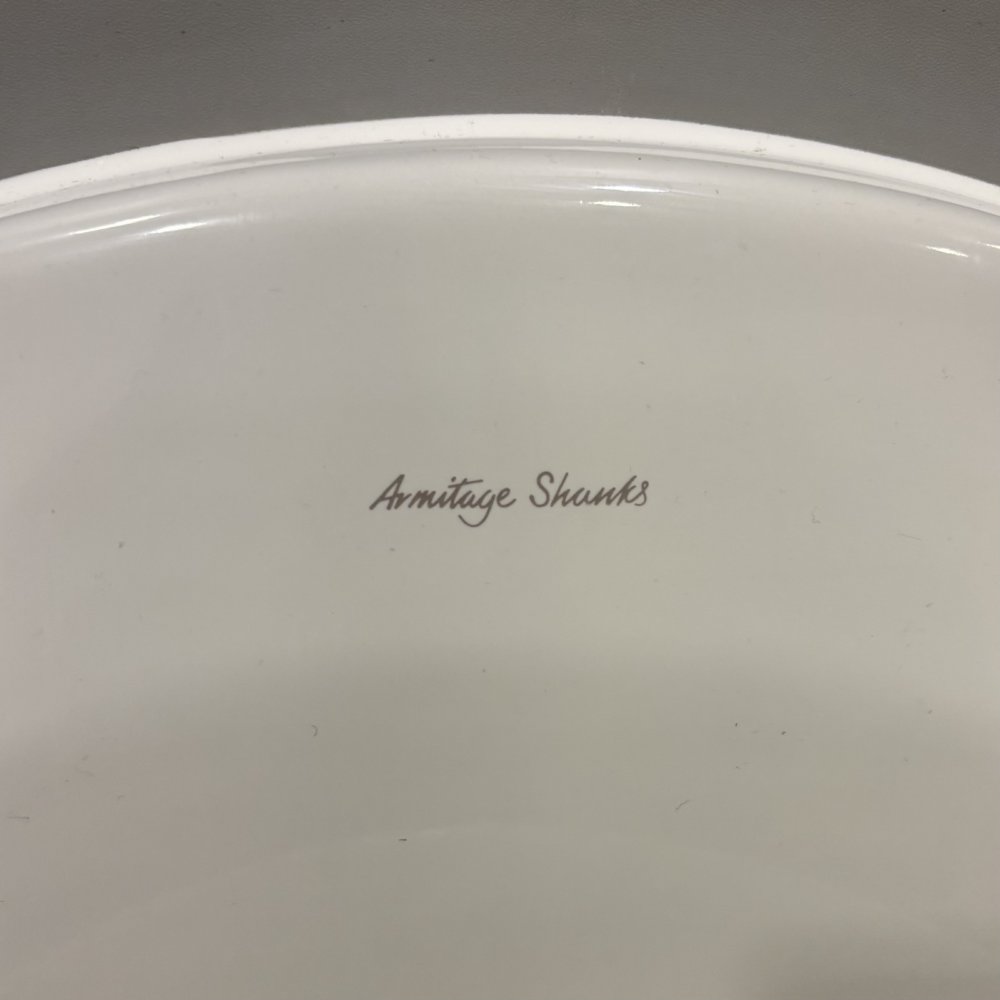
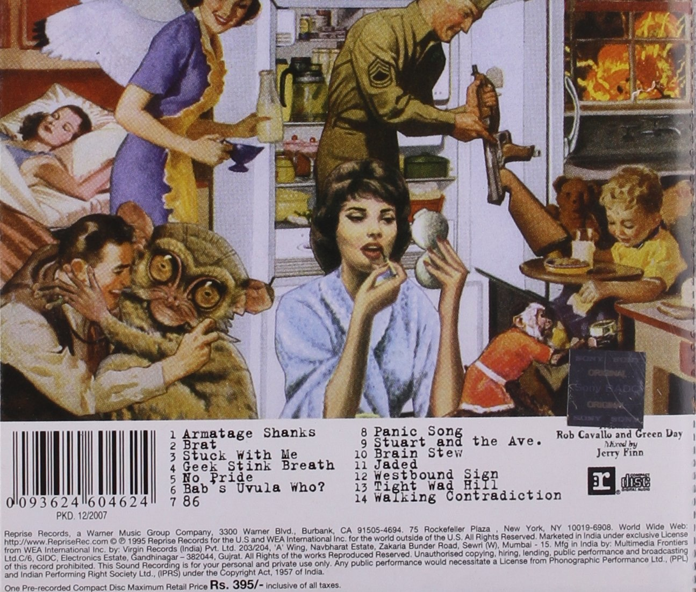
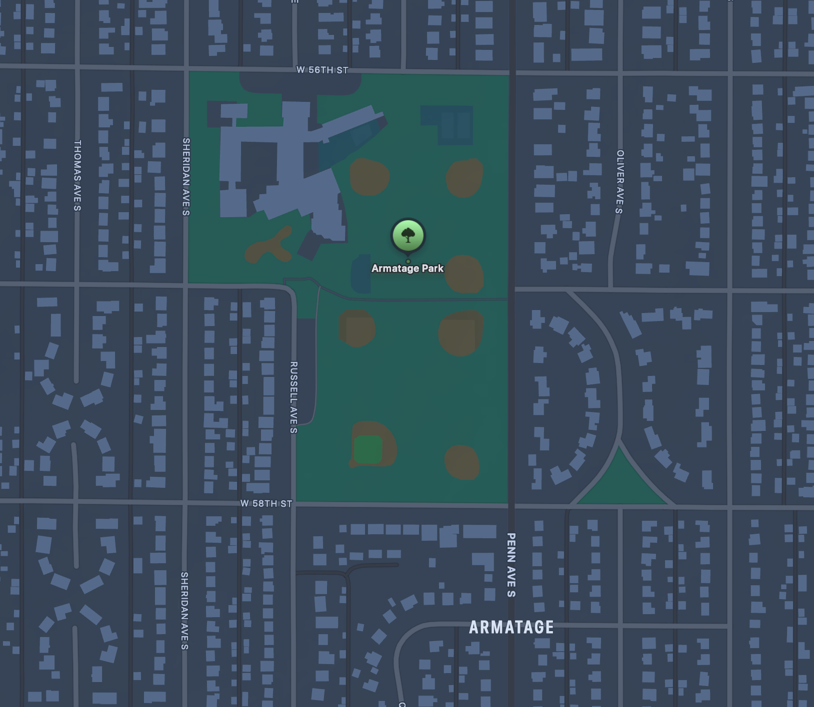

I was in London for the past few days, and while using the bathroom and I noticed this funky and uniquely British brand name on the urinal — "Armitage Shanks”. No idea, what it means or the history, but I love the scripty type and it’s impossible to say without an English twinge in your voice.
I instantly thought about the Green Day song Armatage Shanks track #1 off of Insomniac — a top 3 record from them in my opinion. So then I weirdly snapped a photo of a urinal. Luckily, I was the only one in the loo.
Got me curious, did they name this song after a British toilet company? The coincidence would be crazy, but theirs is spelled with an i instead of an e… then I did a whole bunch of highly specific Green Day related internet searches and yes, Billie Joe confirmed in a tweet from 2011. Also stumbled on some old show footage that confirms this even further. Also glad to know I’m not the only one searching for these answers. I also found someone proclaiming that they chose the spelling to avoid copyright issues, but I have no other info or source to back this up.
Presumably, this discovery happened during this recording session:
Small sidebar: during the 1994 MTV Music Awards, Green Day was supposed to play their hit song Basket Case from their breakout album Dookie. Instead of doing that... they came out and played Armatage Shanks a song that would not be released for over a year. A move I’ve always respected.
Then, in other strange coincidences, the day after we returned from England, I was looking at Apple Maps after learning about an extremely sad and unfortunate event in my city and noticed a park nearby with the name Armatage (with an a like the song)…
I was aware of this area of the city, but never knew the name of the neighborhood. I ended up reading all about the woman who is the namesake of the neighborhood as well as the school there, Maude D. Armatage. She was an incredible woman who did a lot of good for the people and children of Minneapolis, and is one of the people to thank for our tremendous parks system.
Then maybe because I was looking for it at this point, but in the evening that same night, I was listening to The Dollop while doing the dishes (as one does), and that name "Armitage" popped up once again. I had part two of the Bo Gritz episodes playing, and the deputy assistant secretary of defense for East Asia and Pacific affairs under Regan, Richard Armitage, gets mentioned. I’ve never heard of this guy before, turns out he's a real piece of garbage and likely responsible for the Iran-Contra. But there’s that name again…
Continuing some searching, the word/name Armitage is all over the place and fairly common, but I was so intrigued for a small amount of time how this name kept appearing in my life. Toilets, one of your favorite songs, a neighborhood about 15 minutes from your house, and a podcast episode can all collide in unrelated ways within the span of a few days.